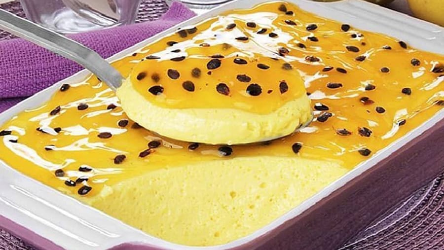
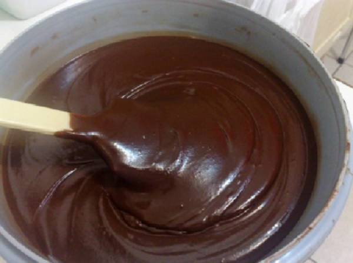

Tema III
Recheios de moda
Iogurte Caseiro
"John Sabores"
Ingredientes:
- 200ml de água morna
- 100ml de água natural
- 400g de leite em pó
- 50g de iogurte natural
- 200g de açúcar.
Como fazer:
- Pegar uma tigela normal, colocar a água natural, o leite e bater com uma batideira eléctrica.
- Adicionar a água morna, bater durante 1 minuto, depois colocar o iogurte natural e bater novamente. Depois de bater, tapar muito bem e deixar descansar durante 8 horas.
- Depois de descansar, colocar o açúcar, a essência e bater mais 1 vez.
- Depois disso, levar ao frigorífico. Depois de sair do frigorífico toma bem que vais Amar.
Musse de Maracujá
"John Sabores"
Ingredientes:
- 2 pacotes de natas
- 4 maracujas, separar o sumo das sementes
- 1 lata de leite condensado.
Como fazer:
- Pegar uma tigela, bater as natas. Depois de ficar cremosa, adicionar o leite e bater durante 1 minuto.
- Adicione o sumo de maracujá e bater novamente, depois colocar as sementes por cima e levar ao frigorífico.
- Depois de sair do frigorífico toma bem que vais Amar.

Recheio de Chocolate
"John Sabores"
Ingredientes:
- 4 latas de leite condensado
- 8 colheres de manteiga
- 300g de chocolate em pó.
Como fazer:
- Em uma panela colocar o leite, a manteiga e o chocolate em pó, misturar muito bem e levar ao fogo. Daí misturar sem parar.
- Depois da fervido o chocolate, desligar o fogo e levar ao frigorífico.
- Depois de sair do frigorífico recheia bem que vais Amar.

Recheio de Maracujá
"John Sabores"
Ingredientes:
- 2 pacotes de natas
- 1 lata de leite condensado
- 1 pacote de sumo de Maracujá em pó
- 1 maracujá
- 3 colheres de leite em pó.
Como fazer:
- Pegar em uma tigela normal, colocar os pacotes de natas e bater. Adicionar o leite e bater mais 1 minuto, também adicionar o sumo em pó e bater novamente.
- Depois disso, pegar uma outra tigela normal, colocar o leite e volta a bater.
- Depois de bater, juntar tudo e misturar. Em seguida colocar a maracujá, misturar e depois levar ao frigorífico.
- Depois de levar no frigorífico recheia bem que vais Amar.